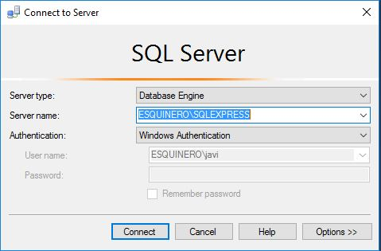
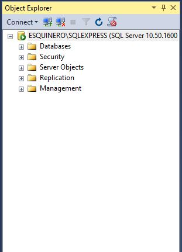
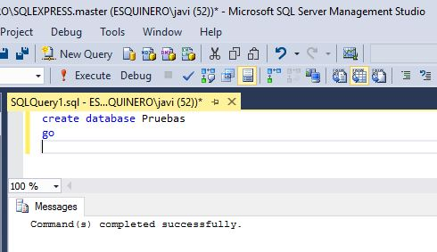
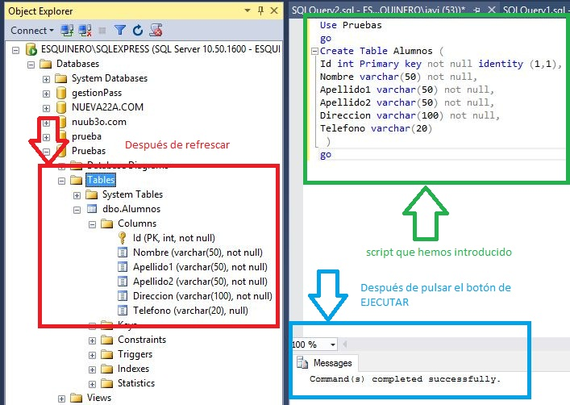
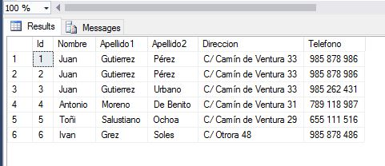

Aprendiendo Sql a Martillazos.
Probablemente, no quizá no he comenzado bien, seguro, que no es la mejor manera de aprender SQL, pero es básicamente, la que yo he ejecutado, por tanto voy a poner encima de la mesa, todo lo que yo he aprendido en estos años, contando que quizá no es el modo más ortodoxo, seguro que no es el más eficaz, pero por supuesto, te aportará un enfoque diferente.
La mejor manera de motivar a tu cerebro, es iniciarlo a la fuerza.
Nos saltaremos toda la teoría para arrancar directamente el Sql Managment Studio.
Youtube esta lleno de videos para la instalación de Sql server, de un modo simple. Te recomiendo la versión 2016, sin ninguna duda, además de que es la que verás en las capturas de pantalla. Si bien podrás seguir esta serie de capítulos aunque no dispongas de esta versión.
Si no estas familiarizado, la version Express es gratuita, y la puedes descargar desde por ejemplo Enlace a sitio de Microsoft
Yo trabajaré con la edición Developer, que no esta limitada, para desarrollos. (No observarás diferencias, salvo a lo mejor el idioma, pues mi versión está en Inglés)
Al lio.
Busca en tus programas e inicia Sql Managment Studio
Click o Doble click y lanzamos la apli

La pantalla de inicio del Sql Managment, nos da las primeras elecciones, si bien no voy a tocar este tema ahora, hay opciones muy interesantes a detallar. Pulsa Connect o conectar si tu edición es castellano, y si todo va Ok, porque no te devuelve error, vamos por buen camino.
La primera familiarización que tienes que tener con el Manager, es la ventana de tu izquierda (Explorador de Objetos), donde estarán situados todos los objetos, sobre los que trabajaremos, que como observarás, no es más que un mero explorador, de momento, donde podrás ir desplegando diferentes elementos.

En la barra de iconos tienes un botón que se llama > Nueva Consulta o New Query. Ese es tu primer contacto. Pincha.
Necesitas más ayuda con la conexión
Primer contacto con el Editor
En la parte central, en la ventana que observarás como SqlQuery1.sql....., vamos a iniciar nuestra andadura.
Primer script, copia este contenido en la ventana y pulsa el botón de Ejecutar/Execute
Create database Pruebas
go

Al ejecutar el script, observarás la salida de la ventana de Mensajes en la parte inferior.
Si pulsas, ahora botón derecho, sobre el explorador de objetos, encima de databases o bases de datos, y refrescar o actualizar. Luego pulsas sobre el más y verás tu primera base de datos.
El código ejecutado no distingue de mayusculas o minúsculas. Podiamos haberlo hecho como
CrEaTe DaTaBaSe PrUeBaS
Go
y su ejecución hubiera sido la misma.
Ya tenemos base de datos, pues vamos a por la primera tabla
Pulsa Nueva consulta
Use Pruebas
go
Create Table Alumnos (
Id int Primary key not null identity (1,1),
Nombre varchar(50) not null,
Apellido1 varchar(50) not null,
Apellido2 varchar(50) not null,
Direccion varchar(100) not null,
Telefono varchar(20)
)
go

Ya tenemos nuestra primera tabla.
Última ejecución a ciegas para tener datos.
Insert into Alumnos
(Nombre, Apellido1, Apellido2, Direccion, Telefono)
Values('Juan','Gutierrez','Pérez','C/ Camín de Ventura 33','985 878 986'),
('Juan','Gutierrez','Pérez','C/ Camín de Ventura 33','985 878 986'),
('Juan','Gutierrez','Urbano','C/ Camín de Ventura 33','985 262 431'),
('Antonio','Moreno','De Benito','C/ Camín de Ventura 31','789 118 987'),
('Toñi','Salustiano','Ochoa','C/ Camín de Ventura 29','655 111 516'),
('Ivan','Grez','Soles','C/ Otrora 48','985 878 486')
Pulsa el botón de ejecutar.
Es evidente, que nos hemos saltado muchas lecciones, y hemos hecho acciones, sin conocer el alcance, pero a partir de este momento, como ya disponemos de datos, empezaremos la verdadera base de todo el Sql.
El inicio del todo.
Nueva ventana en el editor de consultas y ahora ejecutamos una Select el origen de todas las sentencias
Select * from Alumnos
Como puedes observar, SELECT, es la sentencia reservada en Sql server para obtener datos. Dado que el SQL, es el lenguaje de acceso a la información de la base de datos, es de recibo entender que esta es la sentencia más usada.
El * viene a decir que queremos todos los campos que anteriormente hemos creado, from desde su orígen, Alumnos, que es la tabla que habíamos creado.
En conclusión, hemos creado una base de datos, una tabla, rellenado con datos la misma, y ahora obtenemos sus resultados.